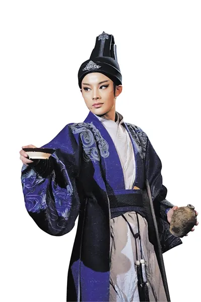

YUEVERSE STUDIO · V3.1.0
越界艺境
浙江小百花数字艺术平台。统一资讯引擎、图片组件、更新系统与视觉框架，为每位演员保留独立的艺术气质与内容空间。
ARTIST SPACE 01
李云霄
云上小百花 · 吕派花旦艺术档案

ARTIST SPACE 02
陈丽君
君行越韵 · 尹派小生艺术档案
浙江小百花数字艺术平台。统一资讯引擎、图片组件、更新系统与视觉框架，为每位演员保留独立的艺术气质与内容空间。
云上小百花 · 吕派花旦艺术档案

君行越韵 · 尹派小生艺术档案